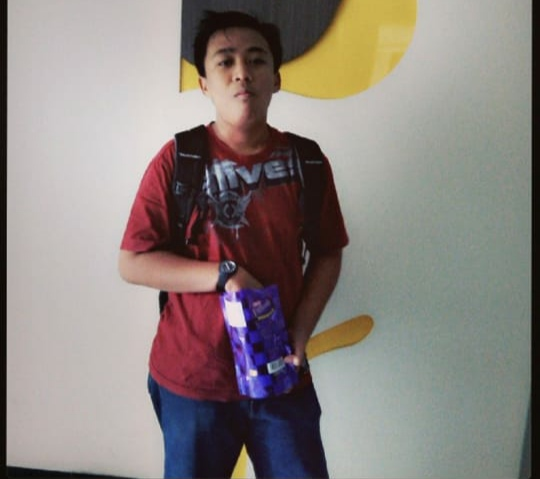

|  |
|
| No | Uraian | Tingkat |
|---|---|---|
| 1. | Staf Divisi Keamanan dan Kesehatan IF ELSE | Program Studi |
| 2. | Volunteer Informatika Mengajar | Program Studi |
| Tahun | Sekolah | Tingkat |
|---|---|---|
| 2004 - 2010 | MI Nurul Huda Sawahan | SD |
| 2010 - 2013 | SMPN 1 Sawahan | SMP |
| 2013 - 2016 | SMAN 1 Nglames | SMA |
| 2016 - 2020 | Universitas Brawijaya | Sarjana |
| No | Nama MK | SKS | Nilai |
|---|---|---|---|
| 1. | Agama Islam | 🌟🌟🌟🌟🌟 | |
| 2. | Bahasa Indonesia | 🌟🌟🌟🌟🌟 | |
| 3. | Matematika Komputasi | 🌟🌟🌟🌟🌟 | |
| 4. | Pemrograman Dasar | 🌟🌟🌟🌟🌟 | |
| 5. | Pengantar Ilmu Komputer | 🌟🌟🌟🌟🌟 | |
| 6. | Sistem Digital | 🌟🌟🌟🌟🌟 |